화학분석기사(구) (2015-09-19 기출문제)
1과목: 일반화학
1. 화학평형에 대한 다음 설명 중 옳은 것은?
- 화학평형이란 더 이상의 반응이 없음을 의미한다.
- 반응물과 생성물의 양이 같다는 것을 의미한다.
- 정반응과 역반응의 속도가 같다는 것을 의미한다.
- 정반응과 역반응이 동시에 진행되는 기가역반응이다.
(정답률: 85%)

2. 에틸알콜(C2H5OH)의 융해열 4.81kJ/mol이라고 할 때 이 알콜 8.72g을 얼렸을 때의 △H는 약 몇 kJ인가?
- +0.9
- -0.9
- +41.9
- -41.9
(정답률: 76%)
3. 다음 유기화합물의 명명이 잘못된 것은?
- CH3CHCICH3:2-chloropropane
- CH3-CH(OH)-CH3:2-propanol
- CH3-O-CH2CH3:methoxyethane
- CH3-CH2-COOH:propanone
(정답률: 73%)
4. 아연-구리 전지에 대한 설명 중 틀린 것은?
- 볼타전지(또는 갈바니전지)의 대표적인 예이다.
- 구리이온이 산화되고 아연이 환원된다.
- 염다리를 사용한다.
- 질량이 증가하는 쪽은 구리전극 쪽이다.
(정답률: 72%)
5. 다음 중 무기화합물에 해당하는 것은?
- C6H10
- NaHCO3
- C12H22O11
- CH3NH2
(정답률: 83%)
6. 16.0M인 H2SO4 용액 8.00mL를 용액의 최종부피가 0.125L가 될 때까지 묽혔다면 묽힌 후 용액의 몰농도는 약 얼마가 되겠는가?
- 102M
- 10.2M
- 1.02M
- 0.102M
(정답률: 83%)
7. 3.5몰의 물을 전기분해하면 산소기체(O2) 몇 g이 생성되겠는가?
- 16
- 32
- 56
- 64
(정답률: 84%)
8. 17Cl의 전자배치를 옳게 나타낸 것은?
- [Ar]3s23p6
- [Ar]3s23p5
- [Ne]3s23p6
- [Ne]3s23p5
(정답률: 86%)
9. 주기율표상에서 나트륨(Na)부터 염소(Cl)에 이르는 3주기 원소들의 경향성을 옳게 설명한 것은?
- Na로부터 Cl로 갈수록 전자친화력은 약해진다.
- Na로부터 Cl로 갈수록 1차이온화에너지는 커진다.
- Na로부터 Cl로 갈수록 원자반경은 커진다.
- Na로부터 Cl로 갈수록 금속성이 증가한다.
(정답률: 85%)
10. 산성비의 발생과 가장 관계가 없는 반응은?
- Ca2+(aq)+CO32-(aq)→CaCO3(s)
- S(s)+O2(g)→SO2(g)
- N2(g)+O2(g)→2NO(g)
- SO3(g)+H2O(L)→H2SO4(aq)
(정답률: 87%)
11. 다음 반응에서 HCO3- 이온은 어떤 작용을 하는가?
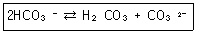
- 오직 BrΦnsted-Lowry acid로만 작용한다.
- 오직 BrΦnsted-Lowry base로만 작용한다.
- BrΦnsted-Lowry acid 및 BrΦnsted-Lowry base로 작용한다.
- BrΦnsted-Lowry acid도 BrΦnsted-Lowry base 도 아니다.
(정답률: 80%)
12. 노르말 알케인(normal alkane)의 일반식은?
- CnH2n+1
- CnH2n
- CnH2n+2
- CnH2n-2
(정답률: 86%)
13. 벤젠을 실험식으로 옳게 나타낸 것은?
- C6H6
- C6H5
- C5H6
- CH
(정답률: 82%)
14. 산과 염기에 대한 설명으로 옳은 것은?
- 산은 붉은 리트머스 시험지를 푸르게 변화시킨다.
- 염기는 용액 내에서 수소이온(H+)을 생성하는 물질이다.
- 산은 pH값이 7이상인 물질이다.
- 산과 염기가 반응하면 염과 물이 생성된다.
(정답률: 83%)
15. 백금 원자 1개의 질량은 몇 g인가? (단, 백금의 원자량은 195.09g/mol이다.)
- 3.24×10-23g
- 3.24×10-22g
- 1.62×10-23g
- 1.62×10-22g
(정답률: 84%)
16. 몰(mole)에 대한 설명으로 틀린 것은?
- 1몰을 아보가드로 수만큼의 입자수를 의미한다.
- 1몰의 물질은 그램 단위의 원자량과 동일한 질량을 갖는다.
- 1몰 산소 기체의 질량은 그 원소의 원자량과 같다.
- 표준온도와 압력(STP) 상태에서 기체 1몰은 22.4L의 부피를 차지한다.
(정답률: 80%)
17. 일정한 온도와 압력에서 진행되는 다음 연소반응에 관련된 내용을 틀리게 설명한 것은?
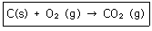
- 0.5몰의 탄소가 0.5몰의 산소와 반응하여 0.5몰의 이산화탄소를 만든다.
- 1그램의 탄소가 1그램의 산소와 반응하여 1그램의 이산화탄소를 만든다.
- 이 반응에서 소비된 산소가 1몰이었다면, 생성된 이산화탄소의 몰수는 1몰이다.
- 이 반응에서 1L의 산소가 소비되었다면 생성된 이산화탄소의 부피는 1L이다.
(정답률: 88%)
18. 3.0M AgNO3 200mL를 0.9M CuCl2 350mL에 가해졌을 때, 생성되는 AgCl(분자량=143g)의 양은?
- 8.58g
- 45.1g
- 85.8g
- 451g
(정답률: 65%)
19. 부탄이 공기 중에서 완전 연소하는 화학 반응식은 다음과 같다. 괄호 안에 들어갈 계수들 중 a의 값은 얼마인가?
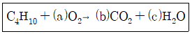
- 5
- 11/2
- 6
- 13/2
(정답률: 90%)
20. 주어진 온도에서 N2O4(g)⇄2NO2(g)의 계가 평형상태에 있다. 이 때 계의 압력을 증가시키면 반응이 어떻게 진행되겠는가?
- 정반응과 역반응의 속도가 함께 빨라져서 변함없다.
- 평형이 깨어지므로 반응이 멈춘다.
- 정반응으로 진행된다.
- 역반응으로 진행된다.
(정답률: 90%)
2과목: 분석화학
21. 진한 염산에 HCl(분자량 36.46)이 무게비로 37.0wt% 있다. 이 염산의 밀도가 1.19g/mL 라면 몰 농도는 약 얼마인가?
- 6.1 M
- 12.1 M
- 18.1 M
- 24.1 M
(정답률: 85%)
22. KH2PO4와 KOH로 구성된 혼합용액의 전하균형식으로 옳은 것은?
- [H+]+[K+]=[OH-]+[H2PO4-]+2[HPO42-]+3[PO43-]
- 2[H+]+[K+]=[OH-]+[H2PO4-]+2[HPO42-]+3[PO43-]
- [H+]+[K+]=[OH-]+[H2PO4-]+[HPO42-]+3[PO43-]
- 2[H+]+[K+]=[PO43-]
(정답률: 73%)
23. 요로드화 반응에 대한 설명 중 틀린 것은?
- 요오드를 적정액으로 사용한다는 것은 l2에 과량의 l-가 첨가된 용액을 사용함을 의미한다.
- 요오드화 적정의 지시약으로 녹말지시약을 사용할 수 있다.
- 간접요오드 적정법에는 환원성 분석물질을 미량의 l-에 가하여 요오드를 생성시킨 다음 이것을 적정한다.
- 환원성 분석물질이 요오드로 직접 측정되었을 때, 이 방법을 직접 요오드적정법이라 한다.
(정답률: 69%)
24. 표준 수소 전극에서의 반응 및 표준 전위(E°)를 가장 옳게 나타낸 것은?
- 2H+(A=1)+2e-⇄H2(A=2) E°=0.0V
- 2H+(A=2)+2e-⇄H2(A=1) E°=0.0V
- 2H+(A=1)+2e-⇄H2(A=1) E°=0.0V
- 2H+(A=2)+2e-⇄H2(A=2) E°=0.0V
(정답률: 77%)
25. 다음 수용액들의 농도는 모두 0.1M이다. 이온세기(ionic strength)가 가장 큰 것은?
- NaCl
- Na2SO4
- Al(NO3)3
- MgSO4
(정답률: 86%)
26. 25℃에서 0.⑤0M 트리메틸아민(Trimethylamine) 수용액의 pH는 얼마인가? (단, 25℃에서 (CH3)3NH+의 Ka 값은 1.58×10-10이다.)
- 5.55
- 7.55
- 9.25
- 11.25
(정답률: 58%)
27. 무게분석법에서 결정을 성장시키는 방법으로 틀린 것은?
- 용해도를 증가시키기 위해 온도를 서서히 올린다.
- 침전제를 가급적 빨리 가한다.
- 침전제를 가할 때 잘 저어준다.
- 가급적 침전제의 농도를 낮게 하여 침전시킨다.
(정답률: 70%)
28. 침전적정에서 종말점을 검출하는 데 일반적으로 사용하는 방법이 아닌 것은?
- 전극
- 지시약
- 빛의 산란
- 리트머스 시험지
(정답률: 75%)
29. Fe3+을 포함하는 시료 10mL를 0.02M EDTA 20mL와 반응시켰다. 이 때 Fe3+는 모두 착물을 형성했고 EDTA는 과량으로 남게 된다. 과량의 EDTA는 0.⑤M Mg2+ 용액 3mL로 역적정하였다. 원래 시료 용액 중에 있는 Fe3+의 몰농도는?
- 0.025M
- 0.⑤0M
- 0.25M
- 0.50M
(정답률: 68%)
30. 활동도계수의 특성에 대한 설명으로 가장 거리가 먼 것은?
- 용액이 무한히 묽어짐에 따라 주어진 화학종의 활동도계수는 1로 수렴한다.
- 농도가 높지 않은 용액에서 주어진 화학종의 활동도계수는 전해질의 종류에 따라서만 달라진다.
- 주어진 이온세기에서 같은 전하를 가진 이온들의 활동도계수는 거의 같다.
- 전하를 띠지 않은 분자의 활동도계수는 이온세기에 관계없이 대략 1이다.
(정답률: 74%)
31. pH 10인 완충 용액에서 0.0360 M Ca2+ 용액 50.0mL를 0.0720M EDTA로 적정할 경우에 당량점에서의 칼슘 이온의 농도 [Ca2+]는 얼마인가? (단, 조건 형성 상수(conditional formation constant) Kㆍf값은 1.34×1010이다.)
- 0.0240M
- 1.34×10-6 M
- 1.64×10-6 M
- 1.79×10-12 M
(정답률: 31%)
32. 다음 반응에 대한 화학평형상수 K를 옳게 나타낸 것은?
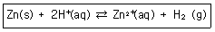
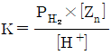
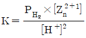
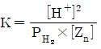
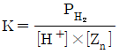
(정답률: 86%)
33. 다음 평형반응에 대한 Kb는 얼마인가? (단, HCN의 Ka의 값은 6.20×10-10이다.)
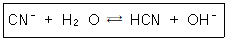
- 1.61×10-5
- 1.54×10-6
- 1.73×10-5
- 1.45×10-6
(정답률: 86%)
34. Mn2+가 들어 있는 시료용액 50mL를 0.1 M EDTA 용액 100mL와 반응시켰다. 모든 Mn2+와 반응하고 남은 여분의 EDTA를 금속지시약을 사용하여 0.1M Mg2+ 용액으로 적정하였더니 당량점까지 50mL가 소비되었다. 시료용액에 들어있는 Mn2+의 농도는 몇 M인가?
- 0.1
- 0.2
- 0.3
- 0.4
(정답률: 68%)
35. 강산이나 강염기로만 되어 있는 것은?
- HCl, HNO3, NH3
- CH3COOH, HF, KOH
- H2SO4, HCl, KOH
- CH3COOH, NH3, HF
(정답률: 87%)
36. F-는 Al3+에는 가리움제(masking agent)로 작용하지만 Mg2+에는 반응하지 않는다. 어떤 미지시료에 Mg2+와 Al3+이 혼합되어 있다. 이 미지시료 20.0mL를 0.0800M EDTA로 적정하였을 때 50.0mL가 소모되었다. 같은 미지시료를 새로 20.0mL 취하여 충분한 농도의 KF를 5.00mL 가한 후 0.0800M EDTA로 적정하였을 때는 30.0mL가 소모되었다. 미지시료 중의 Al3+ 농도는?
- 0.080M
- 0.096M
- 0.104M
- 0.120M
(정답률: 52%)
37. 0.01M 염산 수용액의 pH는?
- 0.01
- 0.1
- 2
- -2
(정답률: 90%)
38. 산화-환원 지시약의 색깔이 변하는 전위 범위는? (단, n은 반응에 참여하는 전자의 수이다.)
- E=E°± (0.⑤916/n) V
- E=E°± 1.0V
- E=E°± 0.⑤916 V
- E=E°± 0.⑤916n V
(정답률: 90%)
39. 다음 중 단위를 잘못 나타낸 것은?
- 주파수 : Hz
- 힘 : N
- 일률 : J
- 전기량 : C
(정답률: 88%)
40. 미지시료 내의 특정 물질의 양을 분석하는 방법으로 적정이 사용된다. 적정의 요건으로 틀린 것은?
- 적정에서의 반응은 느려도 크게 상관없다.
- 반응은 화학양론적이어야 한다.
- 부반응이 없어야 한다.
- 반응이 진행되어 당량점부근에서 용액의 어떤 성질에 변화가 일어나야 한다.
(정답률: 86%)
3과목: 기기분석I
41. 유기분자의 구조 및 작용기에 대한 정보를 적외선(IR)흡수 분광스펙트럼으로부터 얻을 수 있다. 적외선 흡수분광법에 대한 설명으로 틀린 것은?
- 결합전자전이가 허용된 결합만 흡수피크로 나타난다.
- 쌍극자모멘트의 변화가 있어야 흡수피크로 나타난다.
- 적외선 흡수 측정을 위하여 간섭계를 사용한 Fourier 변환분광기를 주로 사용한다.
- 파이로 전자검출기는 특별한 열적 및 전기적 성질을 가진 황산트리글리신 박편으로 만든다.
(정답률: 60%)
42. ICP(유도결합플라즈마) 분광법에서 통상 사용되는 토치는 보통 3가지의 도입이 일어나는 관으로 구성된다. 다음 중 그 구성이 아닌 것은?
- 산화제 도입구
- 냉각 기체 도입구
- 플라즈마 기체 도입구
- 시료 에어로졸 도입구
(정답률: 70%)
43. X-선 회절기기에서 토파즈(격차간격 d=1.356Å)가 회절 결정으로 사용되는 경우 Ag의 Ka1선인 0.497Å을 관찰하기 위해서는 측각기(goniometer) 각도를 몇 도에 맞추어야 하는가? (단, 2θ 값을 계산한다.)
- 10.6
- 14.2
- 21.1
- 28.4
(정답률: 57%)
44. 들뜬 단일항 상태와 들뜬 삼중항 상태에 대한 설명 중 틀린 것은?
- 모든 전자스핀이 짝지어 있는 분자의 전자상태를 단일항 상태라고 하며, 이 분자가 자기장에 놓이는 경우에도 전자의 에너지 준위는 분리되지 않는다.
- 분자에 있는 전자쌍 중의 전자 하나가 보다 높은 에너지 준위로 들뜨면 전자의 에너지 상태는 단일항 상태 또는 삼중항 상태로 된다.
- 들뜬 단일항 상태의 경우 들뜬 전자의 스핏은 바닥상태의 전자처럼 여전히 짝지어 있지만 삼중항 상태에서는 두 개의 전자스핀이 짝짓지 않고 평행하게 존재한다.
- 전자스핀의 변화와 함께 일어나는 단일항-삼중항 상태의 전이는 단일항-단일항 상태 전이 보다 일어날 가능성이 더 크므로 들뜬 삼중항 상태에서의 전자 수명이 길다.
(정답률: 72%)
45. Lambert-Beer 법칙을 나타내는 다음 수식(A=εbc)의 각 요소에 대한 설명 중 틀린 것은?
- ε는 물흡수광계수이다.
- c는 빛의 속도를 나타낸다.
- b는 시료의 두께를 나타낸다.
- A는 흡광도를 나타내며 상수항이다.
(정답률: 89%)
46. 기기 부분장치의 표면에서 생기는 산란과 반사에 의해 주로 발생하는 떠돌이 빛(stray light)은 Beer의 법칙에서 어긋나는 요인이 된다. 떠돌이 빛에 의한 영향으로 옳은 것은?
- 흡광도가 클 때 큰 오차를 나타낸다.
- 흡광도가 작을 때 더 큰 오차를 나타낸다.
- 흡광도와 관계없이 일정한 오차를 나타낸다.
- 겉보기 흡광도가 실제 흡광도보다 항상 크게 나타난다.
(정답률: 54%)
47. 전형적인 분광기기의 구성장치가 아닌 것은?
- 분리용 관
- 복사선 검출기
- 안정한 복사에너지 광원
- 제한된 스펙트럼 영역을 제공하는 장치
(정답률: 73%)
48. 원자흡수 분광법을 이용하여 특별하게 수은(Hg)을 정량하는 데 사용되는 가장 적합한 방법은?
- 찬 증기 원자화법
- 불꽃 원자화 장치법
- 흑연로 원자화 장치법
- 금속 수소화물 발생법
(정답률: 84%)
49. 불꽃을 사용하는 원자화 장치에서 공기-아세틸렌가스 대신 산화이질소-아세틸렌가스를 사용하게 되면 주로 어떤 효과가 기대되는가?
- 붗꽃의 온도가 감소한다.
- 불꽃의 온도가 증가한다.
- 가스 연료의 비용이 줄어드나.
- 시료의 분무 효율이 증가한다.
(정답률: 77%)
50. 원자분광법의 시료도입방법 중 고체시료에 전처리 없이 직접 사용할 수 있는 방법은?
- 기체 분무화법
- 수소화물 생성법
- 레이저 증발법
- 초음파 분무화법
(정답률: 78%)
51. 적외선 흡수분광법에서 지문영역은?
- 600~1200cm-1
- 1200~1800cm-1
- 1800~2800cm-1
- 2800~3600cm-1
(정답률: 74%)
52. 유도결합플라즈마 광원인 토치(torch)의 불꽃에서 운도 분포를 적절하게 나타낸 것은?
- 유도코일 근처에서 온도가 가장 낮다.
- 불꽃의 제일 앞쪽에서 온도가 가장 높다.
- 불꽃의 앞 끝으로부터 유도코일로 갈수록 온도는 높아진다.
- 불꽃의 제일 앞 끝과 유도코일의 중간지점 근처에서 온도가 가장 높다.
(정답률: 79%)
53. 여러 가지의 전자전이가 일어날 때 흡수하는 에너지(△E)가 가장 작은 것은?
- n→π*
- n→σ*
- π→π*
- σ→σ*
(정답률: 63%)
54. 다이아몬드 기구에 의해 많은 수의 평행하고 조밀한 간격의 홈을 가지도록 만든 단단하고, 광학적으로 평평하고, 깨끗한 표면으로 구성된 장치는?
- 간섭필터
- 회절발
- 간섭쐐기
- 광전증배관
(정답률: 79%)
55. 공기 중에서 파장 500nm, 진동수 6.0×1014Hz, 속도 3.0×108m/s, 광자(photon)의 에너지 4.0×10-19인 빛이 굴절률 1.5인 투명한 액체 속을 통과할 때의 설명으로 옳지 않은 것은?
- 파장은 500m이다.
- 속도는 2.0×108m/s이다.
- 진동수는 6.0×1014Hz이다.
- 광자의 에너지는 4.0×10-19J이다.
(정답률: 53%)
56. 분자발광분광법에서 사용되는 용어에 대한 설명 중 틀린 것은?
- 내부전환-들뜬 전자가 복사선을 방출하지 않고 더 낮은 에너지의 전자상태로 전이하는 분자 내부의 과정
- 계간전이-다른 다중성의 전자상태 사이에서 교차가 일어나는 과정
- 형광-들뜬 전자가 계간전이를 거쳐 삼중항 상태에서 바닥상태로 떨어지면서 발광
- 외부전환-들뜬 분자와 용매 또는 다른 용질 사이에서의 에너지 전이
(정답률: 72%)
57. ClCH2aCHb(CH3c)2 분자의 고분해능 1H-핵자기공명분광 1차 스펙트럼에서 a, b 및 c 수소 봉우리의 다중도는?
- 2, 9, 2
- 9, 8, 5
- 2, 9, 8
- 2, 21, 2
(정답률: 59%)
58. 단색 X-선 빛살의 광자가 K-껍질 및 L-껍질의 내부전자를 방출시켜 스펙트럼을 얻음으로써 시료원자의 구성에 대한 정보와 시료구성 성분의 구조와 산화상태에 대한 정보를 동시에 얻을 수 있는 전자스펙트럼법은?
- Auger 전자분광법(AES)
- X-선 광전자분광법(XPS)
- 전자에너지 손실 분광법(EELS)
- 레이저마이크로탐침 질량분석법(LMMS)
(정답률: 84%)
59. 분자 에너지는 병진(translation), 진동(vibration), 회전(rotation), 전자(electronic)에너지 등으로 구분된다. 이들 중 연속적 변화를 나타내는 것은?
- 진동에너지
- 전자에너지
- 병진에너지
- 회전에너지
(정답률: 65%)
60. 13C-NMR의 특징에 대한 설명으로 틀린 것은?
- H-NMR보다 검출이 매우 용이하다.
- 분자골격에 대한 정보를 얻을 수 있다.
- 화학적 이동이 넓어서 봉우리의 겹침이 적다.
- 탄소들 사이의 짝지음이 잘 일어나지 안는다.
(정답률: 67%)
4과목: 기기분석II
61. 질량분석법에서 이온화 방법에 대한 설명으로 옳은 것은?
- 화학온화방법을 사용하면 (M-1)+ 봉우리를 관찰할 수 없다.
- 전자충격이온화방법은 약한 이온원으로 분자이온 봉우리 관찰이 용이하다.
- 장이온화법은 센 이온원으로 분자이동 봉우리를 관찰하기 힘들다.
- 매트릭스-지원레이저탈착/이온화법의 경우 고질량(m/z) ＞10,000) 고분자를 관찰하는데 사용된다.
(정답률: 80%)
62. 용액 속에서 전해 반응으로 생성시킨 l2를 이용하면 그 용액 속에 함께 존재하는 H2S(aq)의 농도를 분석할 수 있다. 50.0mL의 H2S(aq) 시료에 Kl 4g을 가한 후 52.6mA의 전류로 812초 동안 전해하였더니 당량점이 도달하였다, H2S 시료 용액의 농도는? (단, 원소의 원자량은 S=32.066, K=39.098, l=126.904, H=1.077이다.)
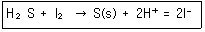
- 0.443mM
- 0.885mM
- 4.43mM
- 8.85mM
(정답률: 29%)
63. 유도결합 플라즈마 질량분석법에서의 방해작용이 아닌 것은?
- 떠돌이빛 방해
- 이중하전이온 방해
- 다원자이온 방해
- 동중핵이온 방해
(정답률: 76%)
64. 질량 분석법의 질량스펙트럼에서 알 수 있는 가장 유효한 정보는?
- 분자량
- 중성자의 무게
- 음이온의 무게
- 자유 라디칼의 무게
(정답률: 88%)
65. 기체크로마토그래피법에서 시료주입법에 대한 설명으로 가장 옳은 것은?
- 분할 주입법은 고농도 시료나 기체 시료에 좋으며, 정량성도 매우 좋다.
- 분할 주입법은 분리도가 떨어지며, 불순물이 많은 시료를 다룰 수 있다.
- 비분할 주입법은 희석된 용액에 적합하고 주입되는 동안 휘발성화합물이 손실되므로 정량분석으로 좋지않다.
- on-column 주입법은 정량분석에 가장 적합하고 분리도가 높으나, 열에 민감한 화합물에는 좋지 않다.
(정답률: 51%)
66. 열 분석법인 DTA(시차열법분석)와 DSC(시차주사열량법)에서 물리ㆍ화학적 변화로서 흡열 봉우리가 나타나지 않는 경우는?
- 녹음이나 용융
- 탈착이나 탈수
- 증발이나 기화
- 산소의 존재 하에서 중합반응
(정답률: 50%)
67. 황산구리 수용액을 전기분해하면 음극에서는 구리가 석출되고, 양극에서는 산소가 발생한다. 0.5A의 전류로 1시간 동안 전기분해했을 때, 양극에서 발생하는 산소의 부피(mL)는 표준상태에서 약 얼마인가? (단, 두 전극의 반쪽반응은 다음과 같다.)
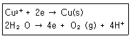
- 56
- 104
- 112
- 224
(정답률: 43%)
68. 전기량법은 전극에서 충분히 산화 및 환원반응이 일어나게 시간을 주는 방법으로, 이러한 방법 중 많은 양의 분석에 적당한 방법은?
- 전기무게 분석법
- 일정전위 전기량법
- 일정전류 전기량법
- 전기량 적정법
(정답률: 55%)
69. 기체-고체 크로마토그래피(GSC)는 기체 크로마토그래피의 일종으로 이동상 기체를, 고정상으로는 고체를 사용하는 경우를 일컫는다. 이 때 이동상과 고정상 사이에서 분석물의 어떤 상호작용이 분리에 기여하는가?
- 분배(Partition)
- 흡착(Adsorption)
- 흡수(Absorption)
- 이온교환(Ion Exchange)
(정답률: 72%)
70. 선택 인자(selectivity factor, α)의 변화요인으로 가장 거리가 먼 것은?
- 컬럼의 온도 변화
- 시료의 주입량 변화
- 이동상의 조성 변화
- 정지상의 조성 변화
(정답률: 54%)
71. 질량분석법을 여러 가지 성분의 시료를 기체 상태로 이온화한 다음 자기장 혹은 전기장을 통해 각 이온을 질량/전하의 비에 따라 분리하여 질량스펙트럼을 얻는 방법이다. 질량분석기의 기기장치 중 진공으로 유지되어야 하는 부분이 아닌 것은?
- 이온화장치
- 질량분리기
- 검출기
- 신호처리기
(정답률: 75%)
72. 유기화합물의 혼합 용액을 기체 크로마토그래피로 분리하여 다음과 같은 데이터를 얻었다. 화합물의 머무름지수를 표시한 것 중 가장 거리가 먼 것은?
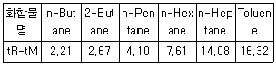
- n-Butane, 400
- 2-Butane, 431
- Toluene, 726
- n-Heptane, 761
(정답률: 46%)
73. 길이 30.0cm의 분리관을 사용하여 용질 A와 B를 분석하였다. 용질 A와 B의 머무름 시간은 각각 13.40분과 16.40분이고 봉우리 너비(4τ)는 각각 1.25분과 1.38이었으며 머물지않는 화학종은 1.40분 만에 통과하였다. 선택인자(α)는 얼마인가?
- 0.80
- 1.25
- 10.72
- 11.88
(정답률: 51%)
74. Pt 산화전극을 사용하여 Fe2+를 전기량으로 적정하려고 한다. 이에 대한 설명으로 틀린 것은?
- Fe2+의 농도가 감소하면서 일정전류를 위해서는 전자전위를 증가시켜야 한다.
- 정전류기(galvanostats)를 사용하여 일정전류를 유지한다.
- 물의 전기분해가 일어나면 물을 더 첨가하여 농도가 묽어짐을 방지한다.
- 분석물질을 100% 전류효율로 산화시키거나 환원시키기 위해서 보조시약을 사용한다.
(정답률: 78%)
75. 금속 Zn 전극과 0.1M ZnCl2 수용액 그리고 Cl2와 0.1M HCl 및 탄소 막대 전극을 이용하여 다음과 같이 전지를 구성하였다. 이에 대한 설명으로 틀린 것은?
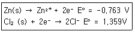
- 환원전극(Cathode) 반응은 Cl2(g)+2e-→2Cl-이다.
- 산화전극(Anode) 반응은 Zn(s)→Zn2++2e-이다.
- 이 전지의 표준전위는 0.596V이다.
- 이 전지의 반응은 Zn(s)+Cl2(g)→Zn2+(aq)+2Cl-(aq)이다.
(정답률: 81%)
76. 기체 크로마토그래피 분리법에서 사용되는 운반 기체로 부적당한 것은?
- He
- N2
- Ar
- Cl2
(정답률: 86%)
77. 고성능액체크로마토그래피에서 분리효능을 높이기 위하여 사용하는 방법으로 극성이 다른 2~3가지 용매를 선택하여 그 조성을 연속적 혹은 단계적으로 변화하며 사용하는 방법은?
- 기울기 용리(gradient elution)
- 온도 프로그램(temperature programmimg)
- 분배 크로마토그래피(partition chromatography)
- 역상 크로마토그래피(reversed-phase chromatography)
(정답률: 88%)
78. 크로마토그래피에서 관의 분리능을 향상시키기 위한 방법으로 가장 거리가 먼 것은?
- 이론단의 수를 높인다.
- 선택인자를 크게 한다.
- 용량인자를 크게 한다.
- 이동상의 유속을 빠르게 한다.
(정답률: 66%)
79. 고체표면의 원소 성분을 정량하는데 주로 사용되는 원자 질량분석법은?
- 양이온 검출법과 음이온 검출법
- 이차이온 질량분석법과 글로우 방전 질량분석법
- 레이저 마이크로탐침 질량분석법과 글로우 방전 질량분석법
- 이차이온 질량분석법과 레이저 마이크로탐침 질량분석법
(정답률: 72%)
80. C, Cl 원자를 한 개씩 함유하는 화합물에서 M. M+1, M+2, M+3 봉우리들의 상대적 크기로 가장 타당한 것은? (단, M은 분자 봉우리를 나타내며, 동위원소 존재비는 Cl35:Cl37=75:25, C12:C13=99:1이다.)
- M:M+1:M+2:M+3-99:1:25:21
- M:M+1:M+2:M+3-99:1:25:0.33
- M:M+1:M+2:M+3-99:1:33:1
- M:M+1:M+2:M+3-99:1:33:0.33
(정답률: 50%)